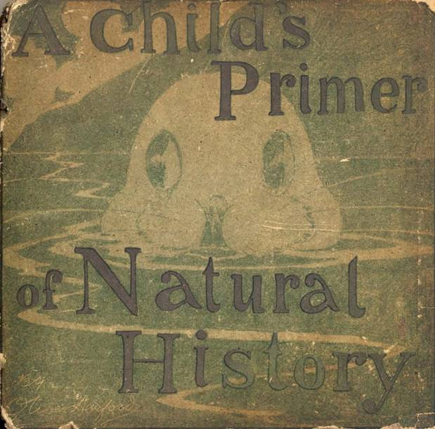
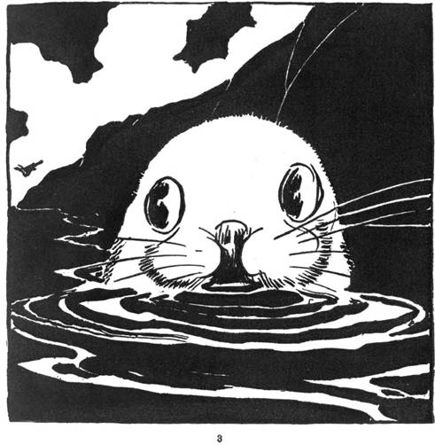
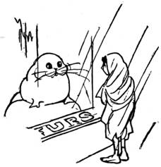
SEE, chil-dren, the Fur-bear-ing Seal;
Ob-serve his mis-di-rect-ed zeal:
He dines with most ab-ste-mi-ous care
On Fish, Ice Water and Fresh Air
A-void-ing cond-i-ments or spice,
For fear his fur should not be nice
And fine and smooth and soft and meet
For Broad-way or for Re-gent Street
And yet some-how I of-ten feel
(Though for the kind Fur-bear-ing Seal
I har-bor a Re-spect Pro-found)
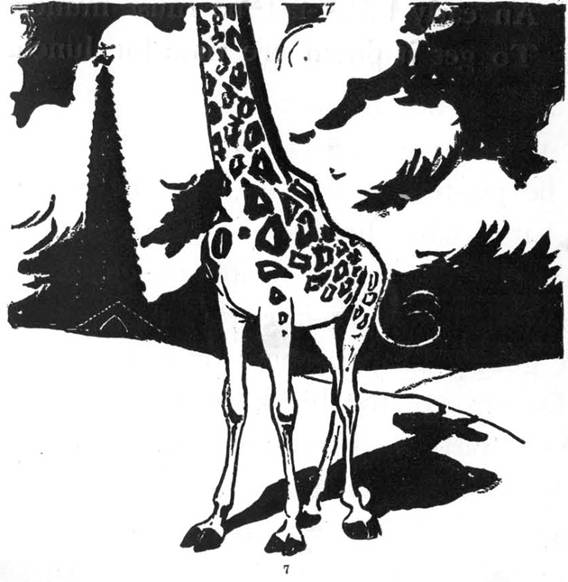
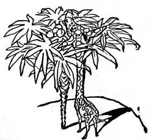
SEE the Gi-raffe; he is so tall
There is not room to get him all
U-pon the page. His head is high-er—
The pic-ture proves it—than the Spire.
That's why the na-tives, when they race
To catch him, call it stee-ple-chase.
His chief de-light it is to set
A good example: shine or wet
He rises ere the break of day,
And starts his break-fast right away.
His food has such a way to go,—
His throat's so very long,—and so
An early break-fast he must munch
To get it down ere time for lunch.
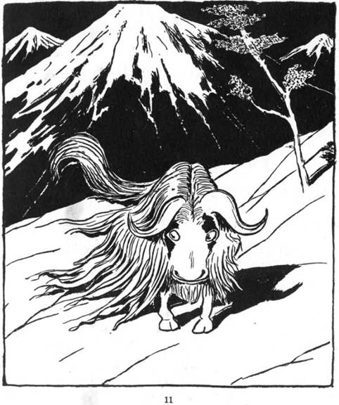
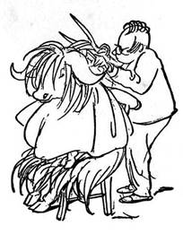
THIS is the Yak, so neg-li-gée:
His coif-fure's like a stack of hay;
He lives so far from Any-where,
I fear the Yak neg-lects his hair,
And thinks, since there is none to see,
What mat-ter how un-kempt he be.
How would he feel if he but knew
That in this Pic-ture-book I drew
His Phys-i-og-no-my un-shorn,
For chil-dren to de-ride and scorn?
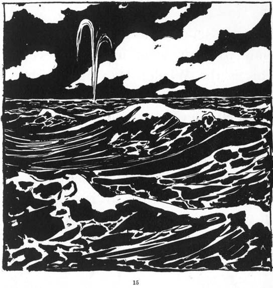
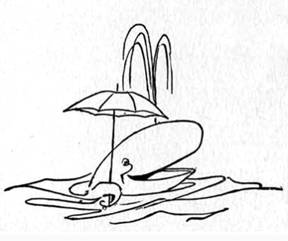
THE con-sci-en-tious art-ist tries
On-ly to draw what meets his eyes.
This is the Whale; he seems to be
A spout of wa-ter in the sea.
Now, Hux-ley from one bone could make
An un-known beast; so if I take
This spout of wa-ter, and from thence
Con-struct a Whale by in-fer-ence,
A Whale, I ven-ture to as-sert,
Must be an an-i-mat-ed squirt!
Thus, chil-dren, we the truth may sift
By use of Log-ic's Price-less Gift.
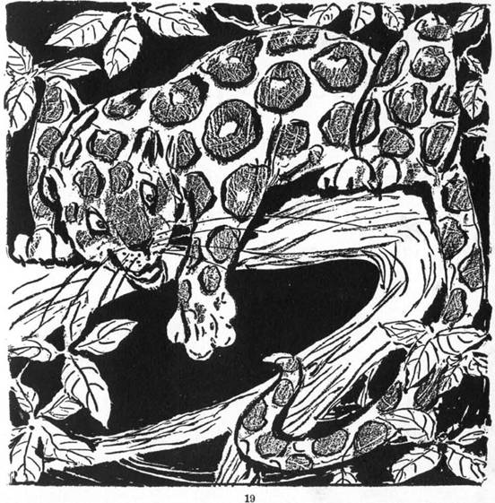
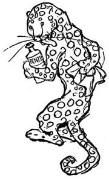
THIS is the Le-o-pard, my child;
His tem-per's any-thing but mild.
The Le-o-pard can't change his spots,
And that—so say the Hot-ten-tots—
Is why he is so wild.
Year in, year out, he may not change,
No mat-ter how the wea-ther range,
From cold to hot. No won-der, child,
We hear the Le-o-pard is wild.
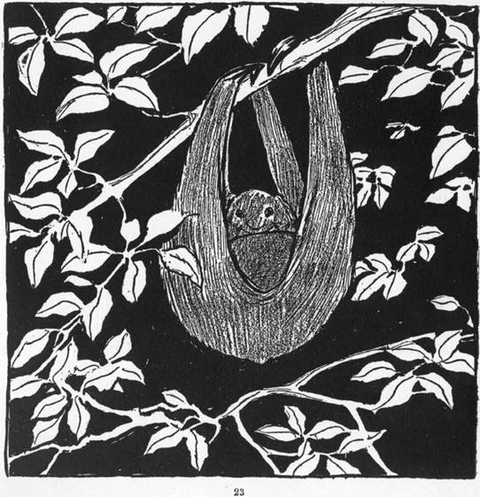
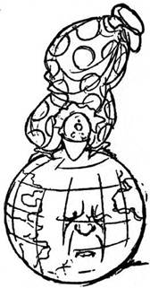
THE Sloth en-joys a life of Ease;
He hangs in-vert-ed from the trees,
And views life up-side down.
If you, my child, are noth-ing loath
To live in In-dol-ence and Sloth,
Un-heed-ing the World's frown,
You, too, un-vexed by Toil and Strife,
May take a hu-mor-ous view of life.
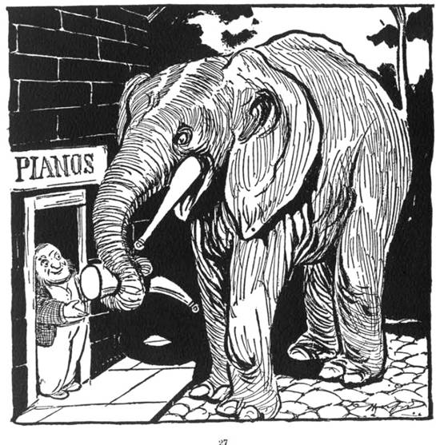
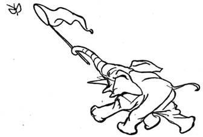
THIS is the El-e-phant, who lives
With but one aim—to please.
His i-vo-ry tusk he free-ly gives
To make pi-a-no keys.
One grief he has—how-e'er he tries,
He nev-er can for-get
That one of his e-nor-mous size
Can't be a house-hold pet.
Then does he to his grief give way,
Or sink 'neath sor-row's ban?
Oh, no; in-stead he spends each day
Con-tri-ving some un-sel-fish way
To be of use to Man.
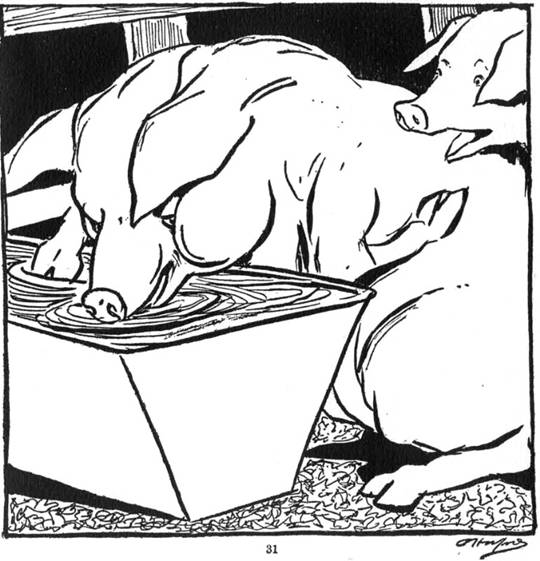
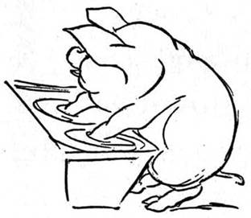
OH, turn not from the hum-ble Pig,
My child, or think him in-fra dig.
We oft hear lit-er-a-ry men
Boast of the in-flu-ence of the Pen;
Yet when we read in His-to-ry's Page
Of Hu-man Pigs in ev-er-y age,
From Cr[oe]sus to the pres-ent day,
Is it, my child, so hard to say
(De-spite the Scribes' vain-glo-ri-ous boast)
What Pen has in-flu-enced Man the most?
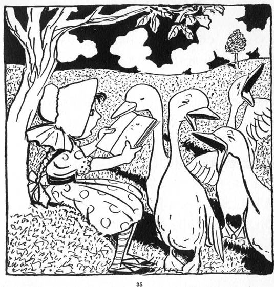
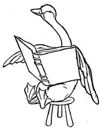
EV-ER-Y child who has the use
Of his sen-ses knows a goose.
See them un-der-neath the tree
Gath-er round the goose-girl's knee,
While she reads them by the hour
From the works of Scho-pen-hau-er.
How pa-tient-ly the geese at-tend!
But do they re-al-ly com-pre-hend
What Scho-pen-hau-er's driv-ing at?
Oh, not at all; but what of that?
Nei-ther do I; nei-ther does she;
And, for that mat-ter, nor does he.
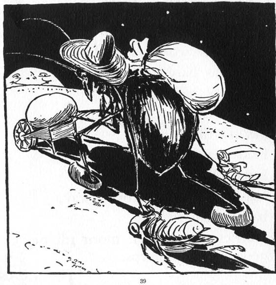
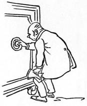
MY child, ob-serve the use-ful Ant,
How hard she works each day.
She works as hard as ad-a-mant
(That's very hard, they say).
She has no time to gal-li-vant;
She has no time to play.
Let Fido chase his tail all day;
Let Kitty play at tag:
She has no time to throw a-way,
She has no tail to wag.
She scurries round from morn till night;
She ne-ver, ne-ver sleeps;
She seiz-es ev-ery-thing in sight,
And drags it home with all her might,
And all she takes she keeps.
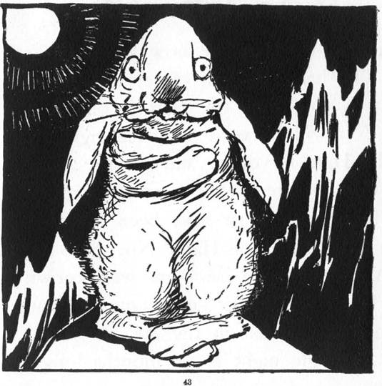
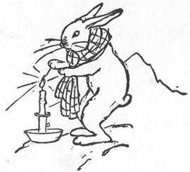
AN Arc-tic Hare we now be-hold.
The hair, you will ob-serve, is white;
But if you think the Hare is old,
You will be ver-y far from right.
The Hare is young, and yet the hair
Grew white in but a sin-gle night.
Why, then it must have been a scare
That turned this Hare. No; 't was not fright
(Al-though such cases are well known);
I fear that once a-gain you're wrong.
Know then, that in the Arc-tic Zone
A sin-gle night is six months long.
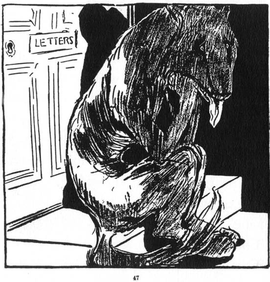
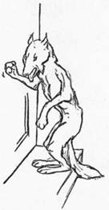
OH, yes, the Wolf is bad, it's true;
But how with-out him could we do?
If there were not a wolf, what good
Would be the tale of RID-ING-HOOD?
The Lit-tle Child from sin will fly
When told the wick-ed Wolf is nigh;
And when, ar-rived at Man's es-tate,
He hears the Wolf out-side his gate,
He knows it's time to put a-way
I-dle fri-vol-i-ty and play.
That's how (but do not men-tion it)
This prim-er hap-pened to be writ.
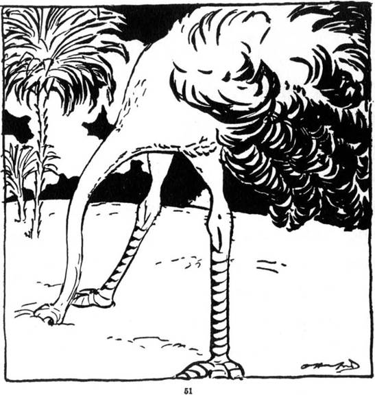
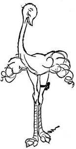
THIS is an Os-trich. See him stand:
His head is bur-ied in the sand.
It is not that he seeks for food,
Nor is he shy, nor is he rude;
But he is sen-si-tive, and shrinks
And hides his head when-e'er he thinks
How, on the Gains-bor-ough hat some day
Of some fine la-dy at the play,
His fea-thers may ob-struct the view
Of all the stage from me or you.
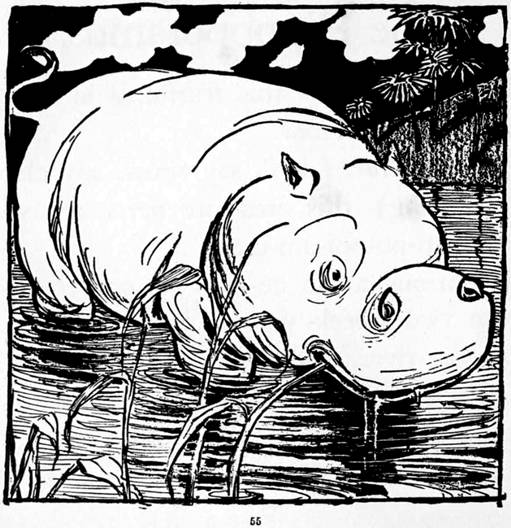
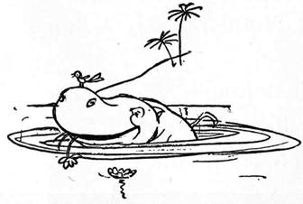
"OH, say, what is this fearful, wild
In-cor-ri-gible cuss?"
"This _crea-ture_ (don't say 'cuss,' my child;
'T is slang)—this crea-ture fierce is styled The Hip-po-pot-am-us.
His curious name de-rives its source
From two Greek words: _hippos_—a horse,
_Potamos_—river. See?
The river's plain e-nough, of course;
But why they called that thing a horse,
That's what is Greek to me."
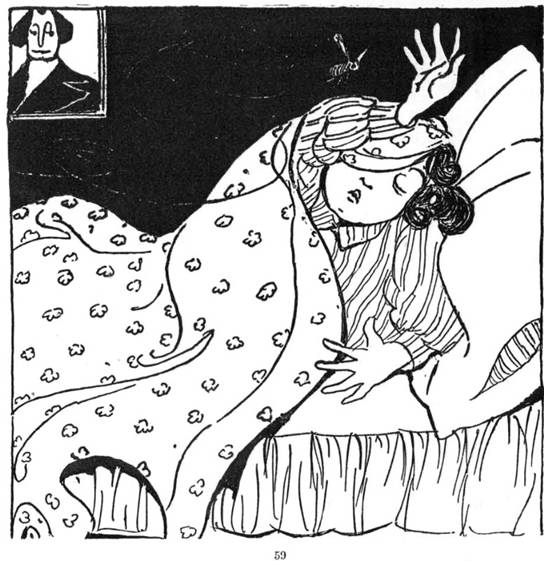
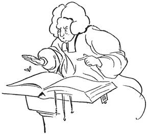
OB-SERVE, my child, the House-hold Fly,
With his ex-traor-di-na-ry eye:
What-ev-er thing he may be-hold
Is mul-ti-plied a thou-sand-fold.
_We_ do not need a com-plex eye
When we ob-serve the Household Fly:
He is so vol-a-tile that he
In _ev-ery_ place at once can be;
He is the buzz-ing in-car-na-tion
Of an-i-mate mul-ti-pli-ca-tion.
Ah! chil-dren, who can tell the Why
And Where-fore of the House-hold Fly?
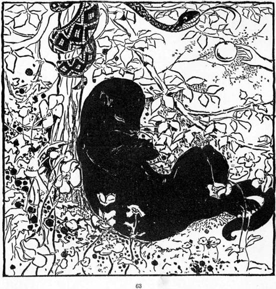
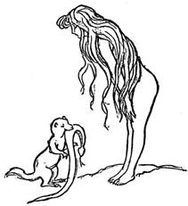
THIS, Chil-dren, is the famed Mon-goos.
He has an ap-pe-tite ab-struse;
Strange to re-late, this crea-ture takes
A cu-ri-ous joy in eat-ing snakes—
All kinds, though, it must be con-fessed,
He likes the poi-son-ous ones the best.
From him we learn how ve-ry small
A thing can bring a-bout a Fall.
Oh, Mon-goos, where were you that day
When Mis-tress Eve was led a-stray?
If you'd but seen the ser-pent first,
Our Parents would not have been cursed,
And so there would be no ex-cuse
For MIL-TON, but for you—Mon-goos!
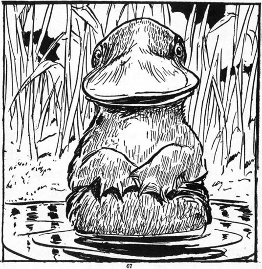
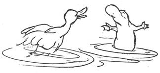
MY child, the Duck-billed Plat-y-pus
A sad ex-am-ple sets for us:
From him we learn how In-de-ci-sion
Of char-ac-ter pro-vokes De-ri-sion.
This vac-il-lat-ing Thing, you see,
Could not de-cide which he would be,
Fish, Flesh, or Fowl, and chose all three.
The sci-en-tists were sore-ly vexed
To clas-si-fy him; so per-plexed
Their brains that they, with Rage at bay,
Called him a hor-rid name one day,—
A name that baf-fles, frights, and shocks us,—
Or-ni-tho-rhyn-chus Par-a-dox-us.
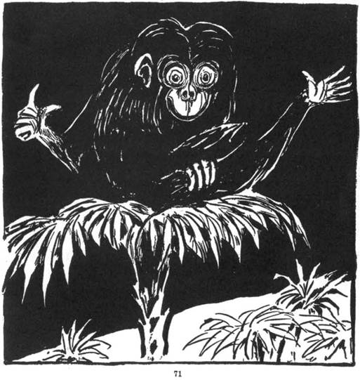
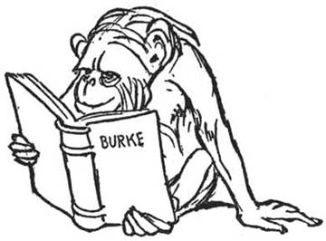
CHIL-DREN, be-hold the Chim-pan-zee:
He sits on the an-ces-tral tree
From which we sprang in ag-es gone.
I'm glad we sprang: had we held on,
We might, for aught that I can say,
Be hor-rid Chim-pan-zees to-day.
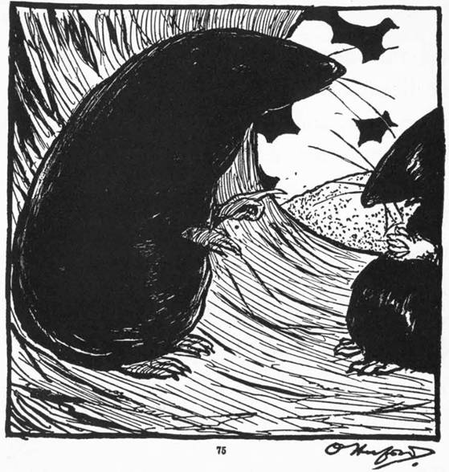
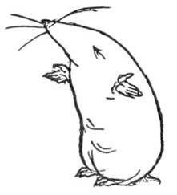
SEE, chil-dren, the mis-guid-ed Mole.
He lives down in a deep, dark hole;
Sweet-ness, and Light, and good Fresh Air
Are things for which he does not care.
He has not e-ven that make-shift
Of fee-ble minds—the _so-cial gift_.
But say not that he has no soul,
Lest hap-ly we misjudge the Mole;
Nay, if we mea-sure him by Men,
No doubt he sits in his dark den
In-struct-ing oth-ers blind as he
Ex-act-ly how the world _should_ be.
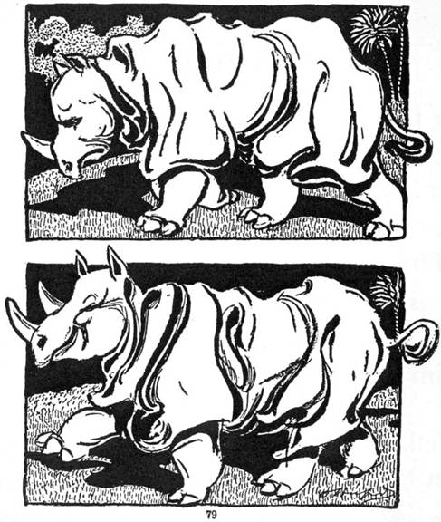
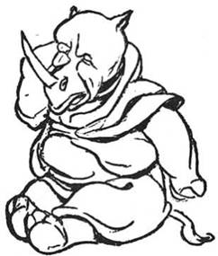
SO this is the Rhi-no-ce-ros!
I won-der why he looks so cross.
Per-haps he is an-noyed a bit
Be-cause his cloth-ing does not fit.
(They say he got it read-y made!)
It is not that, I am a-fraid.
He looks so cross be-cause I drew
Him with one horn in-stead of two.
Well, since he cares so much for style,
Let's give him two and see him smile.
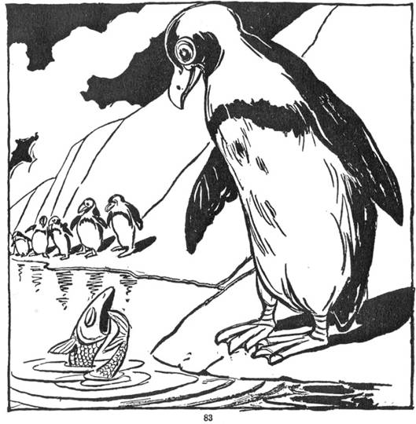
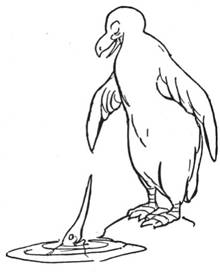
THE Pen-guin sits up-on the shore
And loves the lit-tle fish to bore;
He has one en-er-vat-ing joke
That would a very Saint pro-voke:
"The Pen-guin's might-i-er than the Sword-fish";
He tells this dai-ly to the bored fish,
Un-til they are so weak, they float
With-out re-sis-tance down his throat.
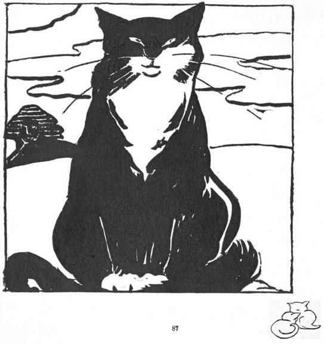
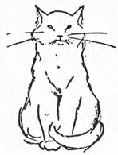
OB-SERVE the Cat up-on this page.
Phil-os-o-phers in ev-er-y age,
The ver-y _wis-est_ of the wise,
Have tried her mind to an-a-lyze
In vain, for noth-ing can they learn.
She baf-fles them at ev-er-y turn
Like Mis-ter Ham-let in the play.
She leads their rea-son-ing a-stray;
She feigns an in-ter-est in string
Or yarn or any roll-ing thing.
Un-like the Dog, she does not care
With com-mon Man her thoughts to share.
She teach-es us that in life's walk
'T is bet-ter to let oth-ers talk,
And lis-ten while _they_ say in-stead
The fool-ish things we might have said.
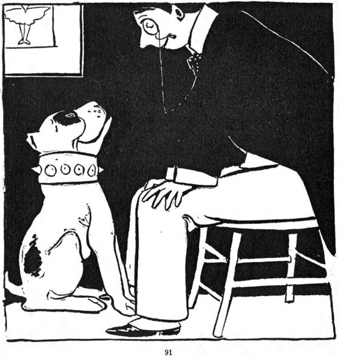
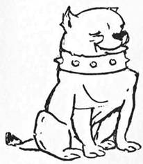
HERE is the Dog. Since time be-gan,
The Dog has been the friend of MAN,
The Dog loves MAN be-cause he shears
His coat and clips his tail and ears.
MAN loves the Dog be-cause he'll stay
And lis-ten to his talk all day,
And wag his tail and show de-light
At all his jokes, how-ev-er trite.
His bark is far worse than his bite,
So peo-ple say. They may be right;
Yet if to make a choice I had,
I'd choose his bark, how-ev-er bad.
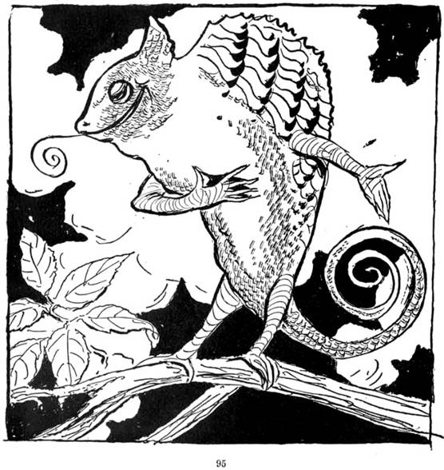
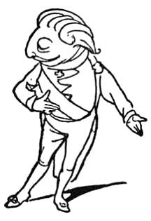
A USE-FUL les-son you may con,
My Child, from the Cha-me-le-on:
He has the gift, ex-treme-ly rare
In an-i-mals, of sav-oir-faire.
And if the se-cret you would guess
Of the Cha-me-le-on's suc-cess,
[Transcriber's Note: In this file, the ligatured oe character is represented by "[oe]".]